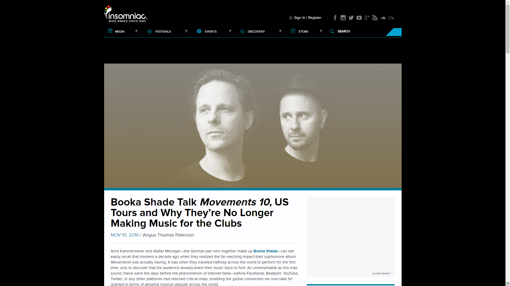

Booka Shade Talk 'Movements', US Tours & Why They’re No Longer Making Music for Clubs
{kind=link}

Arno Kammermeier and Walter Merziger—the German pair who together make up Booka Shade—can still easily recall that moment a decade ago when they realized the far-reaching impact their sophomore album Movements was actually having. It was when they traveled halfway across the world to perform for the first time, only to discover that the audience already knew their music back to font. As unremarkable as this may sound, these were the days before the phenomenon of internet fame—before Facebook, Beatport, YouTube, Twitter, or any other platforms had reached critical mass, enabling the global connection we now take for granted in terms of allowing musical ubiquity across the world.
“We are an internet band,” laughs Walter, recalling the fervor of those early Australian shows not long after the release of Movements, which gets a special 10th-anniversary rerelease this month. They began with “Night Falls,” the same melancholic stormer that opens the album.
“I started to play the drums, and people were screaming so loudly that we couldn’t hear the music anymore,” recalls Arno, who provides percussion for Booka Shade’s live performances, which see him bashing away at Roland V-Drum triggers to recreate those driving kicks.
“We didn’t have this before. We go to the other side of the world, and people know your shit—it’s crazy. This was the first time that we realised, okay, it seems this record is really taking off.”
Arno and Walter had already established their Get Physical label alongside friends DJ T and M.A.N.D.Y., with the modest aim of producing records that would work within the intimate confines of DJ T’s Monza club in Frankfurt. They’d both expected so little from their collab with M.A.N.D.Y. on “Body Language” from the year prior, they’d needed convincing to actually release it as a single—though it was the first of the album’s records to ascend to ubiquity.
“In Europe, nobody knows about this jam band scene. But it works for us, because it’s very musical… It’s not like we’re pushing a button. We sweat onstage, we work.”
Its unmistakable bassline was eventually infamously sampled by the notorious will.i.am on the rather questionably titled “Get Your Money,” a development that was met with howls of derision from the purists. However, this was just one of the countless hip-hop, breaks and other such bootlegs that it inspired, and the otherwise zeitgeist influence of their Movements album.
“We had Kraftwerk coming to visit us backstage and saying Movements was a reference and inspiration,” says Walter. “We met the Chemical Brothers after a show in São Paulo, and they welcome us with, ‘Hey, Booka Shade is here!’ They tell us their song ‘Saturate’ is inspired by ‘In White Rooms.’ Then we heard a song from Madonna called ‘Come Together,’ and you can hear that it’s inspired by ‘Mandarin Girl’—it’s the same break... There were so many who gave us props for it, which was a real honor, though was also really weird, to be honest, as it was never intended as a massive success.”
The recognition in the US was to come a little later, though. When Arno and Walter arrived to play their first live shows in 2004, a good couple years before the EDM revolution gripped the country, they played in a bar to a crowd donned in cowboy hats and drinking beer, who assumed they we were from another planet, with their synthesizers and electronic drumkits.
In time, though, Booka Shade formed an odd and unexpected bond with the “jam band” scene, fronted by acts like the Grateful Dead and Phish, with their visceral live show connecting with a scene that already had a natural love for spontaneity and musical improvisation.
“This is where we had some of our best shows,” says Arno. “One of our top five was a show in Colorado, at the Red Rocks venue in the Rocky Mountains, at a huge 50,000-person venue where we played alongside the Disco Biscuits. In Europe, nobody knows about this jam band scene. But it works well for us, because it’s very musical, and they are very into performance. What we do with the drums and the keyboards onstage—you can really see what’s happening. It’s not like we’re pushing a button; we sweat onstage, and we work for the music.”
For anyone who has witnessed the duo recreating their music onstage, it’s an odd connection that will actually make a lot of sense. Booka Shade bring a real live viscerality, and while they have no trouble recreating the nightclub aesthetics that defined Movements at its core, this also allowed them to cross over to these different audiences, as well as making them a staple festival act. They’ve played EDC Las Vegas, though they claim they’re even more suited for Red Rocks.
“It’s a very unique way of presenting house music,” says Walter. “With normal drums, it goes down more the path of indie-dance acts like LCD Soundsystem—though with the Movements album, we were still definitely focused very much in club music. It’s different, and I think we found a very unique way to present the music.”
Booka Shade have since released several more albums, including the markedly more mellow The Sun & Neon Light that followed in 2008. It yielded them another huge hit with “Charlotte,” which did particularly well on US college radio. That was followed by More! in 2010, their last before they amicably departed from the Get Physical label. Eve in 2013 has been described as a creative struggle that saw them caught between two worlds: wanting to go in a new direction, with one foot still stuck in the past. There’s certainly a creative challenge inherent in transcending the legacy of an album as seminal as Movements.
“At the moment, the music does feel formulaic. It’s a successful one, but this is not artistic.”
“I think we sold a combined 150,000 vinyls, just all the records of Movements together,” says Walter. “This is a crazy figure nowadays. When you have this success, you can’t go back in the studio and say that you want to top that. But we did try and retain the sound we’d made.”
The 10th-anniversary rerelease of Movements allowed them the perfect opportunity to revisit their legacy, while subsequently also closing the door on it. Arno wistfully describes the experience as “therapy.” It offered an opportunity to look back on their past successes, while serendipitously, they were also putting the finishing touches on their upcoming album just days before the release of Movements 10.
“With Movements 10, we can say ‘done.’ The rule for the new album was that everything is allowed, but not the old Booka Shade sounds. No old setups,” says Walter.
“It was a long, long walk since our last album, Eve. We went back and did some club tracks, but this was enough to help show us that this is definitely not where we wanna go anymore. We want to go out of the club; it’s not something that makes sense for us anymore.”
While they found their origins in the clubs and played a significant part in steering house and techno over the past decade, Booka Shade’s freshness eventually became formula.
“At the moment, the music does feel formulaic,” says Arno. “It’s a successful one, but this is not artistic. When we got together in Frankfurt in the ‘90s, there was the feeling of something new happening. Every week, you would listen to music and hear something that hadn’t been done before. If you go for too long without something new happening, you have to break free.”
“We have the feeling that this story is told at the moment,” adds Walter. “That is, until something completely new comes along. For the moment, though, the creative impulse is coming more from America. These young kids, not even 20 years old, are sounding much fresher than a lot of techno at the moment, which is stuck in a formula. We’ve seen a lot of clubs, so this is not so interesting for us. But what’s always interesting is great music.”
Their drive to explore new musical boundaries is also one of the reasons they decided against revisiting their own work, with the second disc of Movements 10 instead featuring remixes from an elite cast of producers like Deetron, Eats Everything, Dennis Ferrer and more.
“There’s only so much you can repeat the same story,” says Arno. “And this is the reason why we didn’t want to touch the album and do our own remixes; this wouldn’t have been interesting for us. We wanted to hear how other producers interpret them. And now we can move on.”
Look forward to Booka Shade 2.0 when their new studio album arrives next year.
Movements 10 USA Tour Dates
November 25, The Exchange, LA, USA (Tickets)
November 26, The Midway, San Francisco, USA
November 27, Gothic Theater, Denver, USA
November 28, The Showbox, Seattle, USA
November 30, The Hoxton, Toronto, Canada
December 01, Concord Music Hall, Chicago, USA
December 02, Brooklyn’s Masonic Temple, New York, USA
December 03, Club Soda, Montreal, Canada
Follow
Booka Shade on Facebook | Twitter